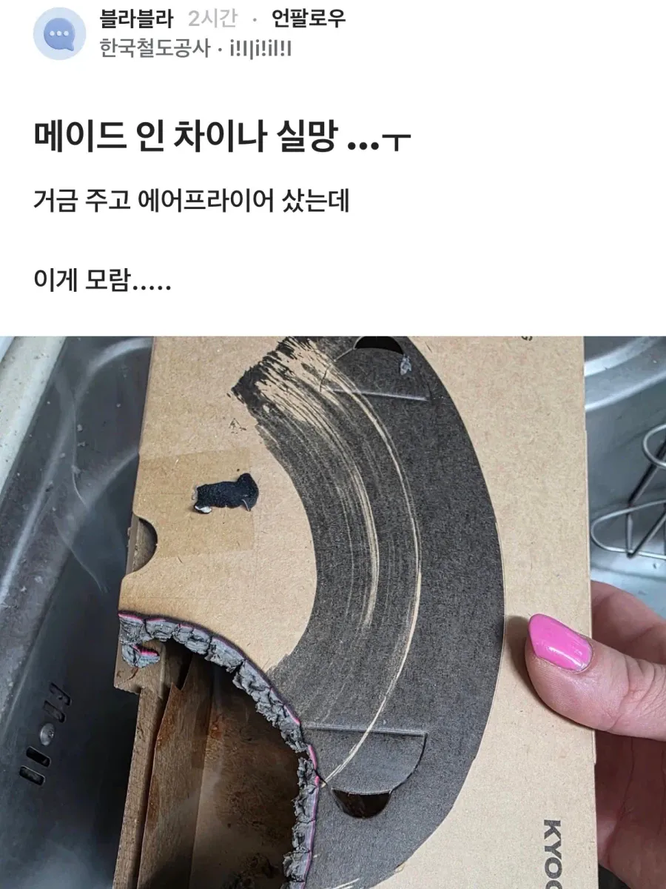
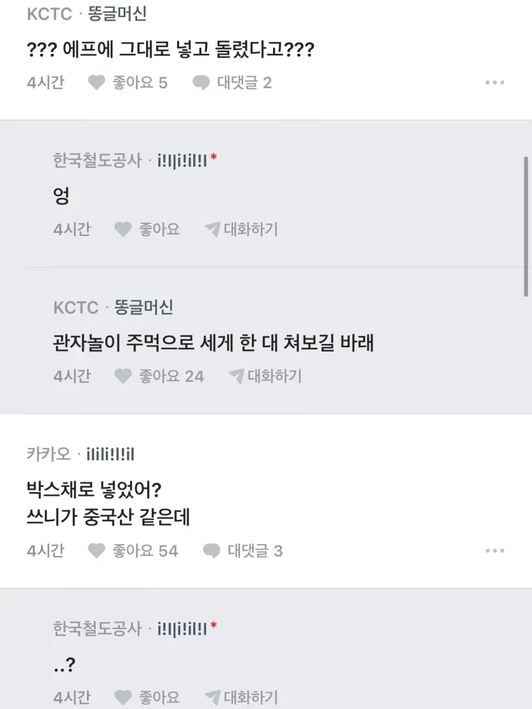
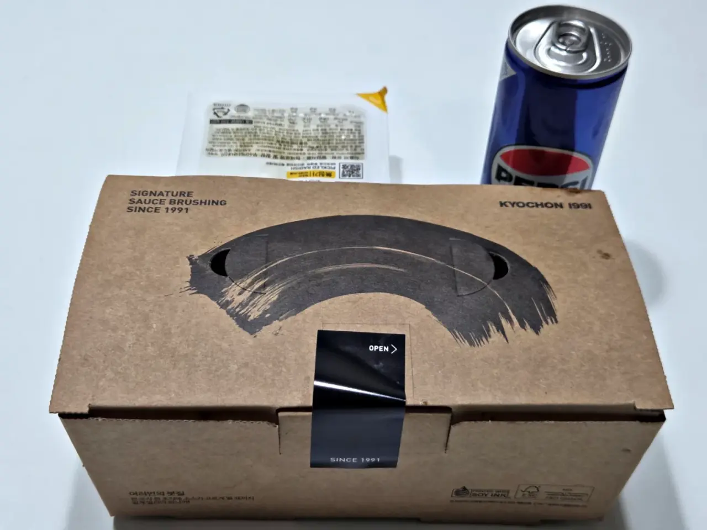

교촌 치킨 박스를 그대로 넣고 돌림
한국철도공사... 메모



교촌 치킨 박스를 그대로 넣고 돌림
한국철도공사... 메모
난 한 20초봤는데도 이해 못해서 끝까지 읽어보고 다시 봄;
나도 뭔가했더니 ㅋㅋㅋㅋㅋㅋㅋㅋㅋ
그런데 저 박스가 다 들어갈 정도면 에어프라이어가 좀 큰놈 같네 ..... ㅋㅋ
종이호일은 되니까 종이박스도 되는줄 알았나뷰지
코로나 걸렸는데, 락스를 물에 희석해서 마시면 몸속 살균소독되서 코로나 제거 되는거 아니냐고 진지하게 문의하던 미친 구매자 생각난다.
뭐 농도 조절 잘하면 물에 닿은 코로나균은 죽겠네
락스 몇방울이면 오염수도 식수로 만들수 있긴해
그거 현직 미국 대통령도 제안한 방법이자너
지린다 시발 같은사람이라고 분류하는게 맞냐이게
경계선 지능장애 일 것 같은데...
그렇다 하기엔 철도 공사네...
얼마전에 정신병자 장애인전형으로 들어가서 칼춤한번 추셨잖아
공기업의 하방 코레일이라 생각하자 ㅋㅋ
매니큐어 때깔부터 보통년이아님💅
곱빼기년임?
곱빼기는모르겠고 40후반이후일듯
손가락 굵기도,,,
매니큐어 색깔.. 진짜 빡시다..
공사는 직원뽑을때 제비뽑기로 뽑나...
공사급이네
대기업에도 저런사람들 꽤 있다
모 기업 근무할때 탕비실 전자레인지로 군고구마 데워먹겠다고 고구마 15분 돌려서 불난적도 있었음
15분은 ㅈㄴ웃기긴한데 불이날정도야??
활활 타는게 아니라 연기 ㅈㄴ 나서 화재경보기 울려서 난리였지ㅋㅋㅋㅋㅋㅋ
블라 저거 닉네임 돈주고 살수도있어??? 울 회사 직원중에 저런 지능이 있다고???
계정 거래 많다고 하더라.
도대체 코레일은..어떤곳인가
저런 빡대가리도 안굶고 돈벌며 살수있는 세상이네
진짜 디스토피아냐 좋은세상이냐 헷갈린다 ㅋㅋ

머리에 물음표 뜨게하는 사람은 멀리하라 그랬다
저긴 도대체 감전당한 사람이 몇명인거임
아 이런사람이 알약 포장채로 먹는구나
사회생활 어캐함?
회사명과 메니큐어 색만으로 특정될 수 있을 듯.
빠가사리냐...
그런데 저런 지능으로 일할 수 있는 일터 맞음? ㅋㅋㅋ
근데 나도 저렇게 넣었는데
전자렌지에 매번 저렇게 돌려서 처먹었을 확률이 100프로
함 치였나?
이해하는데 좀 걸렸는데 내가 잘못된게 아니였구나 ㅁㅊ 저걸 넣는다는 발상 자체가
공단은 몰라도 공사는 저러기 쉽지않을텐데..
오 불맛 첨가?ㅋ
첫짤만 보고 이해하는데 10초 걸렸다